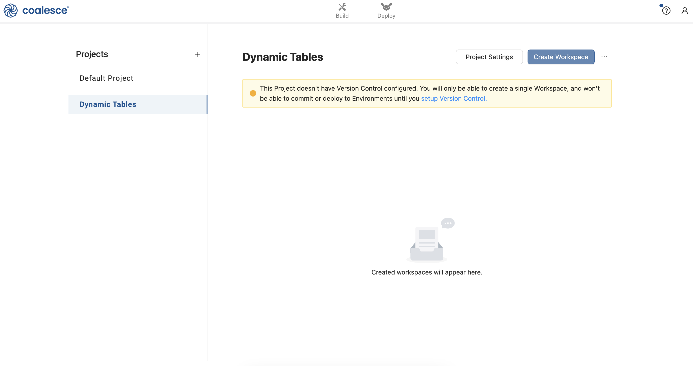
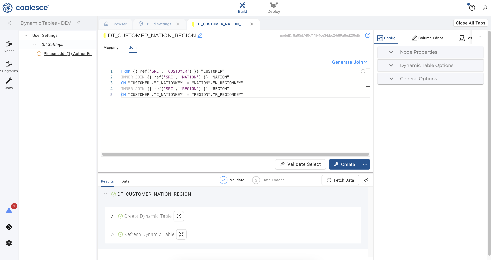
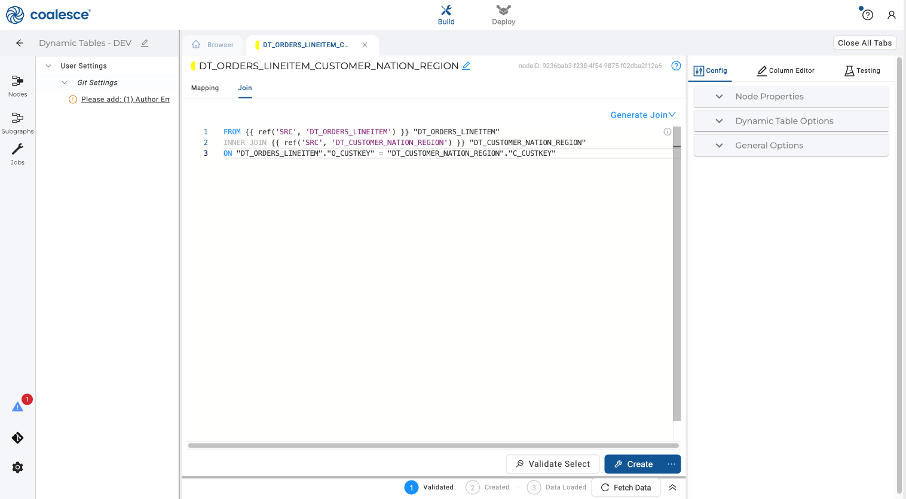
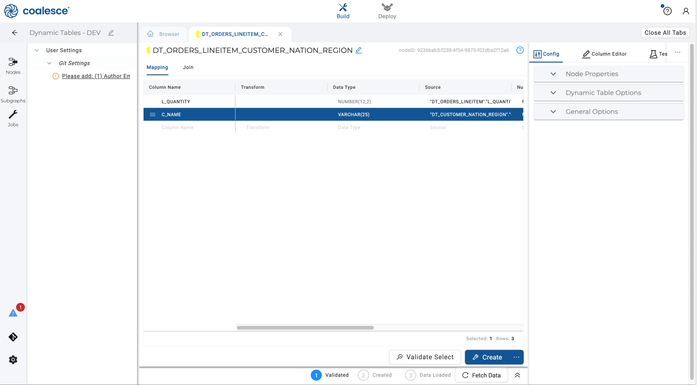
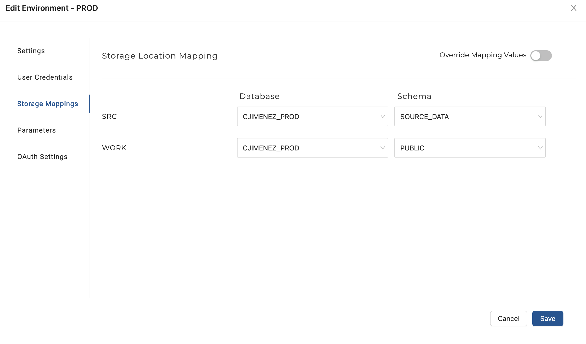
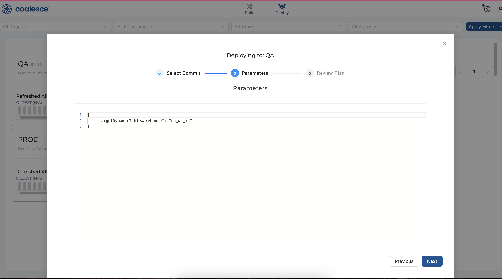

Dynamic tables are a new table type offered by Snowflake that allow data teams to use SQL statements to declaratively define the results of data pipelines. Dynamic tables simplify the process of creating and managing data pipelines by streamlining data transformations without having to manage Streams and Tasks.
Dynamic tables materialize the results of a query that you specify. Instead of creating a separate target table and writing code to transform and update the data in that table, you can define the target table as a dynamic table and specify the SQL statement that performs the transformation. An automated process updates the materialized results automatically through regular refreshes. These automatic refreshes occur based on changes to your data, meaning that they only operate on new data changes since the last refresh.
Using Coalesce to Build Dynamic Tables
As the only transformation solution uniquely built for Snowflake, Coalesce offers a way to visually build, adjust and deploy dynamic tables in Snowflake orders of magnitude faster without having to code by hand. Coalesce provides many "out-of-the-box" node types that are ready to use immediately upon logging into the platform, in addition to empowering users to create their own nodes known as user-defined nodes, or UDNs. The dynamic table node that you will use in the following exercise is a form of a UDN found in Coalesce.
In this guide, you will build a small directed acyclic graph (DAG) in Coalesce using dynamic table nodes that understands dependency ordering. Snowflake handles the refreshing of the pipeline, while Coalesce guarantees that dynamic tables are created only after all upstream dependencies are satisfied. When building pipelines without dynamic tables, Coalesce uses the dependency graph for deployment and refreshing of tables and views.
Prerequisites
- Familiarity with Snowflake
- Basic knowledge of SQL, database concepts, and objects
- Optional completion of the foundational Coalesce Quickstart Accelerating Transformations with Coalesce and Snowflake
What You'll Need
- A Snowflake account trial account or access to an existing account with
ACCOUNT ADMINprivileges - A Coalesce account (either a trial account created via Snowflake Partner Connect, or access to an existing account)
- A git account (optional)
- Google Chrome browser (recommended)
What You'll Learn
- How to create dynamic tables for Snowflake ELT processing, faster and easier than ever before
- How to deploy dynamic tables to non-development environments
What You'll Build
- Analytics-ready dynamic tables
- A directed acyclic graph (DAG) made up of dynamic table nodes
Complete the steps in this section to prepare your Coalesce environment. Please note that these steps assume you are using trial Snowflake and Coalesce accounts. If you are using pre-existing accounts, you will need to adjust your Storage Locations and Mappings to use the sample Snowflake dataset as shown in this guide.
Step 1: Set Up Your Snowflake Trial Account
- Fill out the Snowflake trial account form here. Use an email address that is not associated with an existing Snowflake account.
- When signing up for your Snowflake account, select the region that is physically closest to you and choose Enterprise as your Snowflake edition. Please note that the Snowflake edition, cloud provider, and region used when following this guide do not matter.
After registering, you will receive an email from Snowflake with an activation link and URL for accessing your trial account. Finish setting up your account following the instructions in the email.

Step 2: Create a Coalesce Trial Account with Snowflake Partner Connect
Once you are logged into your Snowflake account, sign up for a free Coalesce trial account using Snowflake Partner Connect. Check your Snowflake account profile to make sure that it contains your fist and last name.
- Select Admin > Partner Connect in the navigation bar on the left hand side of your screen and click on the Coalesce button (under Data Integration).

- Review the connection information and then click Connect.

- When prompted, click Activate to activate your account. You can also activate your account later using the activation link emailed to your address.

- Once you've activated your account, fill in your information to complete the activation process.

Step 3: Complete Your Coalesce Account Setup
- Log in to your Coalesce account and click the + icon in the left sidebar next to Projects. This will create a dedicated Project for your development and deployment Workspaces focused on your work with this guide. Name your new Project Dynamic Tables and then click the Next button.

- You will be prompted to set up version control with Coalesce. For now, click the Skip and Create button twice when prompted. You will set up git for version control in an optional step later in this guide, which will allow you to commit your work and deploy from your development Workspace to your test (QA) and Production Environments.

- Once you've created your Project, click the Create Workspace button to create your development Workspace.

- Name your Workspace Dynamic Tables - Dev and then click the Create button.

- Click the Launch button to open up your development Workspace.

- You are now in the Build interface of your Workspace. In the upper right corner, click the question mark icon to open up the Resource Center.

- Coalesce provides a marketplace of certified nodes for different use cases and transformations. These nodes are made available in the form of a package that can be directly installed into your workspace and are immediately available to use. One of these packages is the Dynamic Tables package.
Open the Build Settings of your workspace, and navigate to Packages. Click the Browse button in the upper right hand corner. This will take you to the Coalesce Marketplace. Find the Dynamic Tables package and click Find out more. Copy the Package ID from the package details page and navigate back to Coalesce.

Click the Install button on the packages page and paste in the Package ID. The most recent version of the package will be automatically selected. Give the package an Alias - this is the name of the package as it will appear in the build interface of Coalesce.

- Once the dynamic tables node is loaded into your account, navigate to back to your Snowflake account and create a new Worksheet named Dynamic Tables.
Copy and run this code in your Worksheet. This will create a standalone Development, QA (Testing) and Production environment for you.

- Return to your Coalesce account, click on the pencil icon next to the name of your Workspace and then click on Storage Mappings. For your
SRCmapping, select your newly createdDEVdatabase (starting with your first initial and last name) andSOURCE DATAschema. For yourWORKmapping, select yourDEVdatabase andREPORTINGschema as shown below.

- Click on Parameters in your Workspace Settings and enter the following parameter in the field. This parameter will set the warehouse that will be used in your development Environment.
{
"targetDynamicTableWarehouse": "DEV ENVIRONMENT"
}

- Click back to your Browser tab and click the Nodes icon in the left sidebar. Click the + icon that appears next to the Search bar. Click Add Sources from the dropdown menu.

- Expand and check all of the data sources under
SRC-SNOWFLAKE_SAMPLE_DATA.TPCH_SF1. Then click Add 8 sources in the bottom right corner.

- You will see 8 new source nodes added to your graph which forms the foundation of your pipeline.

- Select your
CUSTOMER,NATIONandREGIONsource nodes. Then right click and hover over Join Nodes and select Dynamic Table Stage.

- Your new dynamic table node will open to show a handful of configuration settings in the right sidebar. These include Node Properties which includes your Storage Location, node type and whether deployment is enabled for your node.
Under Dynamic Table Options, you have the option of changing the selected warehouse that you would like to use to run your node. Enter the warehouse dev_wh_xs that was created when you ran your setup code in Snowflake. In Coalesce, you have the ability to change and set specific warehouses that run each dynamic table node in a given environment (e.g. DEV, QA, or PROD) by using Parameters.
The Downstream toggle controls whether refreshes are determined by subsequent nodes in your pipeline.
Your Lag Specification determines how often your node is refreshed. Set this schedule to 1 minute as shown.

- Switch over to the Join tab in your dynamic table node and complete the join using the following statement:
FROM {{ ref('SRC', 'NATION') }} "NATION"
INNER JOIN {{ ref('SRC', 'REGION') }} "REGION"
ON "NATION"."N_REGIONKEY" = "REGION"."R_REGIONKEY"
INNER JOIN {{ ref('SRC', 'CUSTOMER') }} "CUSTOMER"
ON "NATION"."N_NATIONKEY" = "CUSTOMER"."C_NATIONKEY"

- Press the Command key to multi-select and delete the columns
N_NATIONKEY,N_REGIONKEY,N_COMMENT,R_REGIONKEYandR_COMMENTin your node.

- Click the Create button to create your dynamic table node. You can expand the DDL statement and view the code that was auto-generated by Coalesce to create the node.

- Click on your Browser tab to return to your graph and select the
ORDERSandLINEITEMsource nodes. Right click and hover over Join Nodes and then click on your click on your dynamic table node.

- In your second dynamic table node, click on Dynamic Table Options on the right side in your config area. In the dropdown, set the lag specification to 1 minute as you did with the previous dynamic table node.

- Click on the Join tab and adjust the join statement as shown in the code below:
FROM {{ ref('SRC', 'ORDERS') }} "ORDERS"
INNER JOIN {{ ref('SRC', 'LINEITEM') }} "LINEITEM"
ON "ORDERS"."O_ORDERKEY" = "LINEITEM"."L_ORDERKEY"

- Click Mapping next to the Join tab. Press the Command key to multi-select and delete the columns
O_ORDERSTATUS,O_TOTALPRICE,O_ORDERDATE,O_CLERK,O_SHIPRIORITY,L_PARTKEYandL_SUPPKEY:

- Click the Create button to create your dynamic table node.

- Click on the Browser tab to return to your graph. Select your two dynamic table nodes that you just created. To aggregate quantity of goods by customer, right click and hover over Join Nodes and then click on Dynamic Table Stage in the dropdown menu.

- Click on the Join tab and adjust the join statement as shown below.
FROM {{ ref('SRC', 'DT_ORDERS_LINEITEM') }} "DT_ORDERS_LINEITEM"
INNER JOIN {{ ref('SRC', 'DT_CUSTOMER_NATION_REGION') }} "DT_CUSTOMER_NATION_REGION"
ON "DT_ORDERS_LINEITEM"."O_CUSTKEY" = "DT_CUSTOMER_NATION_REGION"."C_CUSTKEY"

- Return to the Mapping grid, press the Shift key and select the
C_ADDRESS,C_NATIONKEY,C_PHONE,C_ACCTBAL,C_MKTSEGMENT, andC_COMMENTcolumns. Right click and select Delete Columns from the dropdown menu.

- Select the
C_CUSTKEYcolumn. Press and hold the Shift and Option buttons, then scroll upwards to multi-select every column fromC_CUSTKEYtoL_EXTENDEDPRICE. Right click on the columns and select Delete Columns to bulk delete them. Finally, delete all of the remaining columns butC_NAMEandL_QUANTITY.

- Select the
C_NAMEcolumn and drag it to the top of your Mapping grid so that it appears in front of theL_QUANTITYcolumn. SelectL_QUANTITYand add the aggregation below to the Transform field:
sum({{SRC}})

- In your Config panel to the right, click on General Options. Select Group By All and toggle this on to utilize Snowflake's
GROUP BY ALLcapability.

- Under Dynamic Table Options, ensure that your node will be refreshed slightly less frequently than your previous dynamic table nodes by setting your Time Value to 5 minutes.

- Press the Create button to create your dynamic tables node, and then expand your Create statement to view the
GROUP BY ALLfunction that you added via the Config.

Congratulations! You have built out a small DAG of dynamic table nodes.
- To run your nodes as a DAG in its entirety, select your preceding node
DT_ORDERS_LINEITEMto open it. In the Config section, select the Downstream option and press the Create button.

- Return to your Build interface, open up your
DT_CUSTOMER_NATION_REGIONnode and repeat this action by selecting the Downstream option and creating your node.

- Return to your Build interface and click the Run All button in the upper right corner to run your DAG. Now you are no longer using a lag to refresh the preceding dynamic table nodes. Instead, these dynamic tables will refresh based on the lag time of your subsequent
DT_ORDERS_LINEITEM_CUSTOMER_NATION_REGIONnode.

- Now let's visualize the DAG in Snowflake. Navigate to your Snowflake account and select Data > Databases in the left sidebar.

- Select your
DEVdatabase that you created earlier in this guide (YOURFIRSTINITIALLASTNAME_DEV). Under Source Data, click on Dynamic Tables and select yourDT_ORDERS_LINEITEM_CUSTOMER_NATION_REGIONnode.

- On the right hand side of your Snowflake UI, click on Graph to see the status of your Coalesce DAG that has been visualized in Snowflake.

To deploy your DAG to a non-development environment, you will first need to set up version control in Coalesce by connecting to a git repository.
- Log into git and create a new repository for your dynamic tables Project in Coalesce. Copy the URL for your newly created repository.

- Navigate back to your Coalesce account and click back to your Projects dashboard. Click on Setup Version Control in the prompt under your dynamic tables Project.

- Enter your git repository URL when prompted:

- Enter your git account credentials when prompted and click the Test Account button to confirm that your credentials are correct. Then click Finish. You have set up version control for your Project!

- Launch your dynamic tables Workspace once more and click on the git icon in the lower left corner. Enter "Initial Commit" in the Commit Message field and then click the Commit and Push button.

- Close the git modal and click on the Build Settings (gear icon) in the lower left corner. Now it's time to create two Environments that are tied to the
QAandPRODdatabases that we created as part of our setup in Snowflake.
Click on Environments and then click on the New Environment button. Name your new Environment QA to use as a testing environment. You will need to enter your Snowflake account which can be found in the lower left hand corner of your Snowflake account. Click the Save button to save your QA settings.

- Click on User Credentials and enter your Snowflake user credentials. Then click on Storage Mappings on the left side and set your
SRCmapping to yourQAdatabase (FIRSTINITIALLASTNAME_DB) andSOURCE DATAschema. Set yourWORKmapping to yourQAdatabase andREPORTINGschema. Then click the Save button and close the window.

- Click on the Parameters section and enter the following parameter to designate that any dynamic table node run in your
QAEnvironment will use theqa_wh_xs.Then click the Save button to save yourQAsettings.
{
"targetDynamicTableWarehouse": "qa_wh_xs"
}

- Close out of your
QAEnvironment and click the New Environment button. Name this EnvironmentPROD.You will need to enter your Snowflake account name which can be found in the lower left hand corner of your Snowflake account. Click the Save button to save yourPRODsettings.

- Click on User Credentials and enter your Snowflake credentials as you did for your
QAEnvironment. Be sure to listprod_wh_xsas your warehouse. Then click on Storage Mappings and set your database to yourPRODDB forSRCandWORK.Map yourSRCschema toSOURCE_DATAand yourWORKschema toPUBLIC.Then click the Save button.

- Click on the Parameters section and enter the following parameter to designate that any dynamic table node run in your
PRODEnvironment will use theprod_wh_xs.Then click the Save button.
{
"targetDynamicTableWarehouse": "prod_wh_xs"
}

- Return to the Build interface and click on the git icon in the loweer left corner to commit your changes in preparation for deployment. Name your commit "Env_Update" and then click the Commit and Push button.

Congratulations! You've set up your QA and PROD Environments and are now ready to deploy.
- To deploy your DAG to your
QAEnvironment, switch over to the Deploy interface at the top of your screen:

- Press the Deploy button next to your
QAEnvironment to start the deployment process. Then select your most recent commit (Env_Update) and click Next.

- Your next screen will show the parameter that specifies that your
QAwarehouse should be used. Click the Next button to continue:

- Finally, review your deployment plan and then click the Deploy button.

- Congratulations! You have successfully deployed your DAG to your
QAEnvironment. You can continue working on your DAG, or repeat the deployment process and deploy to yourPRODenvironment.

Congratulations, you've completed this guide on creating dynamic table nodes in Snowflake using Coalesce. Continue with your free trial by loading your own sample or production data and exploring more of Coalesce's capabilities with our documentation and resources.
What we've covered
- How to create dynamic tables for data engineering tasks more efficiently in Coalesce
- How to deploy dynamic tables to non-development environments
- How to build a directed acyclic graph (DAG) made up of dynamic table nodes
Additional resources
- Coalesce FAQs
- Coalesce Documentation
- Reach out to our sales team at coalesce.io or by emailing sales@coalesce.io to learn more!
Happy transforming!